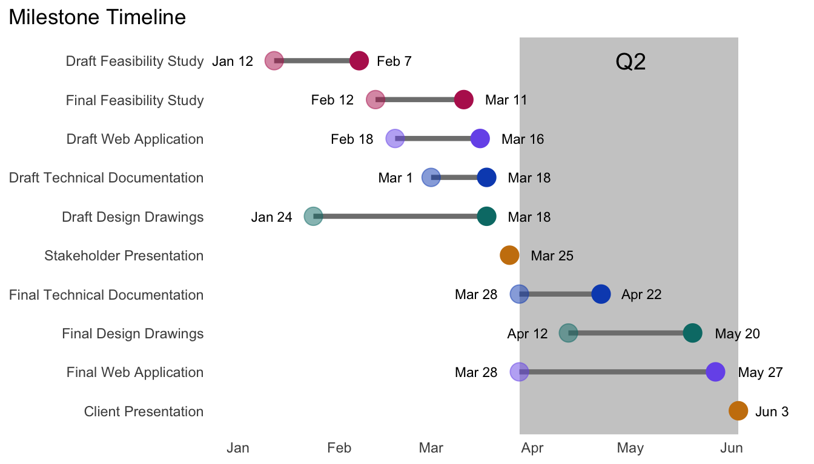

schedule <- read_excel(here("posts", "2022-02-08-how-to-make-a-dumbbell-schedule-with-r", "schedule.xlsx"), sheet = "Sheet1")Here is a tutorial to create a custom dot plot / dumbbell plot schedule with R and geom_dumbbell and geom_segment. With this template you can also color items by categories such as deliverable, status or quarter.
Original inspiration: and guidance on using geom_dumbbell.
Read and view the data
I started from an excel sheet.
kable(schedule) %>%
kable_paper(full_width = TRUE) %>%
row_spec(0, bold = T) %>%
kable_styling(latex_options = "HOLD_position")| milestone | deliverable | start_date | due_date | status | quarter |
|---|---|---|---|---|---|
| Draft Feasibility Study | Feasibility Study | 2022-01-12 | 2022-02-07 | complete | Q1 |
| Final Feasibility Study | Feasibility Study | 2022-02-12 | 2022-03-11 | in progress | Q1 |
| Draft Design Drawings | Design Drawings | 2022-01-24 | 2022-03-18 | in progress | Q1 |
| Final Design Drawings | Design Drawings | 2022-04-12 | 2022-05-20 | not started | Q2 |
| Draft Technical Documentation | Technical Documentation | 2022-03-01 | 2022-03-18 | not started | Q1 |
| Final Technical Documentation | Technical Documentation | 2022-03-28 | 2022-04-22 | not started | Q2 |
| Stakeholder Presentation | Presentation | NA | 2022-03-25 | not started | Q1 |
| Draft Web Application | Web Application | 2022-02-18 | 2022-03-16 | not started | Q1 |
| Final Web Application | Web Application | 2022-03-28 | 2022-05-27 | not started | Q2 |
| Client Presentation | Presentation | NA | 2022-06-03 | not started | Q2 |
Clean the data
Pay attention to date formats with class(schedule$start_date). Cleaning steps created a field for month abbreviation + day of month to use as labels. The deliverable category was reordered based on due date using fct_reorder.
schedule <- schedule %>%
mutate(start_month_num = month(start_date)) %>%
mutate(end_month_num = month(due_date)) %>%
mutate(start_month_name = case_when(
start_month_num == 1 ~ "Jan",
start_month_num == 2 ~ "Feb",
start_month_num == 3 ~ "Mar",
start_month_num == 4 ~ "Apr",
start_month_num == 5 ~ "May",
start_month_num == 6 ~ "Jun",
)) %>%
mutate(end_month_name = case_when(
end_month_num == 1 ~ "Jan",
end_month_num == 2 ~ "Feb",
end_month_num == 3 ~ "Mar",
end_month_num == 4 ~ "Apr",
end_month_num == 5 ~ "May",
end_month_num == 6 ~ "Jun",
)) %>%
mutate(start_label = paste(start_month_name, day(start_date))) %>%
mutate(end_label = paste(end_month_name, day(due_date))) %>%
mutate(milestone = as_factor(milestone)) %>%
mutate(milestone = fct_reorder(milestone, as.numeric(due_date), .desc = TRUE))This step was used for the bounds of the rectangle highlighting the second quarter.
Q2 <- schedule %>%
filter(quarter == "Q2")
xmin_Q2 <- as.POSIXct(min(Q2$start_date, na.rm = TRUE))
xmax_Q2 <- as.POSIXct(max(Q2$due_date, na.rm = TRUE))This step was used to set the x-axis limits when using scale_x_datetime.
min <- as.POSIXct("2022-1-1")
max <- as.POSIXct("2022-6-15")I originally used geom_dumbbell for the start and end dots, but using geom_point twice gave more flexibility for colors and made it easy add transparency to the start dots. The geom_dumbbell code is include for reference.
time_plot <- ggplot(data = schedule, aes(y = milestone)) +
geom_rect(aes(xmin = xmin_Q2, ymin = -Inf,
xmax = xmax_Q2, ymax = Inf),
fill = "grey80", alpha = 0.5) +
# create a thick line between x and xend instead of using default provided by geom_dumbbell
geom_segment(aes(x = start_date, xend = due_date, y = milestone, yend = milestone),
color = "grey50",
size = 1.5) +
# geom_dumbbell(color = "grey80", size_x = 5, size_xend = 5,
# colour_x = "blue", colour_xend = "red") +
geom_point(data = schedule, aes(x = start_date, y = milestone,
color = deliverable), size = 5, alpha = 0.5,
show.legend = FALSE) +
# scale_colour_paletteer_d("Redmonder::qMSOPap") +
# scale_colour_paletteer_d("Redmonder::qMSOPap") +
# scale_colour_paletteer_d("Redmonder::qMSOMed") +
# scale_colour_paletteer_d("palettetown::pelipper") +
scale_colour_manual(values = c("#007a76", "#b7245c", "#ca7f0e", "#0d4fbd", "#785ceb")) + # manually specify colors or use an existing palette
geom_point(data = schedule, aes(x = due_date, y = milestone,
color = deliverable), size = 5,
show.legend = FALSE) +
labs(x = NULL, y = NULL,
title = "Milestone Timeline") +
geom_text(color = "black", size = 3, hjust = 1.5,
aes(x = start_date, label = start_label)) +
geom_text(color = "black", size = 3, hjust = -0.5,
aes(x = due_date, label = end_label)) +
theme_minimal() +
theme(panel.grid = element_blank()) +
theme(plot.title.position = "plot") +
scale_x_datetime(limits = c(min, max)) +
annotate("text", x = as.POSIXct("2022-5-1"), y = schedule$milestone[1], label = "Q2", color = "black", size = 5)
time_plotWarning: Removed 2 rows containing missing values (geom_segment).Warning: Removed 2 rows containing missing values (geom_point).Warning: Removed 2 rows containing missing values (geom_text).
Citation
BibTeX citation:
@online{rivers2022,
author = {Marie Rivers},
title = {How to Make a Dumbbell Schedule with {R}},
date = {2022-02-08},
url = {https://marierivers.github.io/posts/2022-02-08-how-to-make-a-dumbbell-schedule-with-r/},
langid = {en}
}
For attribution, please cite this work as:
Marie Rivers. 2022. “How to Make a Dumbbell Schedule with
R.” February 8, 2022. https://marierivers.github.io/posts/2022-02-08-how-to-make-a-dumbbell-schedule-with-r/.